For reference, here is a table with all the symbols available in the EET MAPICONS.BAM file, BP-BGT-Worldmap BPBGTMAP.BAM file and the symbol numbers used by EET, BP-BGT-Worldmap and other platforms.
All EET numbers and icons are identical to BP-BGT numbers and icons without exception. However, BP-BGT has more entries. It is important to mention that the v1 bam and the v2 bam are completely identical, even if some icons are of course not used in the original version. But for future extensions it is easier if both bam are identical.
| Icon | Origins | EET | BP-BGT Worldmap | Tutu | BG2 / BG2:EE (SoA map) | BG2 / BG2:EE (ToB map) |
|---|---|---|---|---|---|---|
 |
AR1600 (Brynnlaw) | 5 | 5 | - | 5 | - |
 |
AR1500 (The Asylum) | 6 | 6 | - | 6 | - |
 |
AR2100 (Underdark) | 7 | 7 | - | 7 | - |
 |
AR2300 (Underwater City) | 8 | 8 | - | 8 | - |
 |
AR1400 (Temple Ruins) | 9 | 9 | - | 9 | - |
 |
AR1100 (Umar Hills) | 10 | 10 | - | 10 | - |
 |
AR1200 (Windspear Hills) | 11 | 11 | - | 11 | - |
 |
AR1300 (de'Arnise Hold) | 12 | 12 | - | 12 | - |
 |
AR2000 (Trademeet) | 13 | 13 | - | 13 | - |
 |
AR1900 (Druid Grove) | 14 | 14 | - | 14 | - |
 |
AR2500 (Underdark Exit) | 15 | 15 | - | 15 | - |
 |
AR1800 (North Forest) | 16 | 16 | - | 16 | - |
 |
AR1700 (Small Teeth Pass) | 17 | 17 | - | 17 | - |
 |
AR2800 (Suldanessellar) | 18 | 18 | - | 18 | - |
 |
AR1000 (Government) | 19 | 19 | - | 19 | - |
 |
AR0800 (Graveyard) | 20 | 20 | - | 20 | - |
 |
AR0400 (Slums) | 21 | 21 | - | 21 | - |
 |
AR0700 (Waukeen's Promenade) | 22 | 22 | - | 22 | - |
 |
AR0500 (Bridge) | 23 | 23 | - | 23 | - |
 |
AR0900 (Temple) | 24 | 24 | - | 24 | - |
 |
AR0300 (Docks) | 25 | 25 | - | 25 | - |
 |
AR0020 (City Gates) | 26 | 26 | - | 26 | - |
| 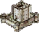 | BS1000 (Balduran's Seatower) | - | 28 | - | - | - |
 |
BG0100 (Baldur's Gate North West) | 29 | 29 | 0 | - | - |
 |
BG0200 (Baldur's Gate North) | 30 | 30 | 1 | - | - |
 |
BG0300 (Baldur's Gate North East) | 31 | 31 | 2 | - | - |
 |
BG0600 (Baldur's Gate West) | 32 | 32 | 3 | - | - |
 |
BG0700 (Baldur's Gate Center) | 33 | 33 | 4 | - | - |
 |
BG0800 (Baldur's Gate East) | 34 | 34 | 5 | - | - |
 |
BG1100 (Baldur's Gate South West) | 35 | 35 | 6 | - | - |
 |
BG1200 (Baldur's Gate South) | 36 | 36 | 7 | - | - |
 |
BG1300 (Baldur's Gate South East) | 37 | 37 | 8 | - | - |
 |
BG1600 (Cloakwood Grove) | 38 | 38 | 9 | - | - |
 |
BG2100 (Cloakwood Falls) | 39 | 39 | 10 | - | - |
 |
BG1700 (Cloakwood Crossings) | 40 | 40 | 11 | - | - |
 |
BG1900 (Bandit Camp) | 41 | 41 | 12 | - | - |
 |
BG2000 (Balduran's Isle) | 42 | 42 | 13 | - | - |
 |
BG0900 (Wyrm's Crossing) | 43 | 43 | 14 | - | - |
 |
BG1800 (Cloakwood Mines) | 44 | 44 | 15 | - | - |
 |
BG2200 (Cloakwood) | 45 | 45 | 16 | - | - |
 |
BG2300 (Friendly Arm Inn) | 46 | 46 | 17 | - | - |
 |
BG2800 (Coast Way) | 47 | 47 | 18 | - | - |
 |
BG2900 (Larswood) | 48 | 48 | 19 | - | - |
 |
BG2400 (Peldvale) | 49 | 49 | 20 | - | - |
 |
BG2600 (Candlekeep) | 50 | 50 | 21 | - | - |
 |
BG3100 (Rocky Coast) | 51 | 51 | 22 | - | - |
 |
BG2700 (Lion's Way) | 52 | 52 | 23 | - | - |
 |
BG3300 (Beregost) | 53 | 53 | 24 | - | - |
 |
BG3000 (Spider Wood) | 54 | 54 | 25 | - | - |
 |
BG3700 (Red Canyons) | 56 | 56 | 26 | - | - |
 |
BG0400 (Upper Chionthar) | 57 | 57 | 27 | - | - |
 |
BG3200 (High Hedge) | 58 | 58 | 28 | - | - |
 |
BG3800 (Trade Way North) | 59 | 59 | 29 | - | - |
 |
BG4000 (Gullykin) | 61 | 61 | 30 | - | - |
 |
BG3600 (The Lighthouse) | 62 | 62 | 31 | - | - |
 |
BG4200 (Wilderness Lake) | 63 | 63 | 32 | - | - |
 |
BG4300 (Trade Way South) | 64 | 64 | 33 | - | - |
 |
BG4400 (Lonely Peaks) | 65 | 65 | 34 | - | - |
 |
BG3900 (Ulcaster School) | 66 | 66 | 35 | - | - |
 |
BG4500 (Firewine Bridge) | 67 | 67 | 36 | - | - |
 |
BG4100 (Ancient Ruins) | 68 | 68 | 37 | - | - |
 |
BG4700 (Xvart Village) | 69 | 69 | 38 | - | - |
 |
BG5200 (Dryad Falls) | 70 | 70 | 39 | - | - |
 |
BG4800 (Nashkel) | 71 | 71 | 40 | - | - |
 |
BG4900 (Carnival) | 72 | 72 | 41 | - | - |
 |
BG5000 (Valley of the Tombs) | 73 | 73 | 42 | - | - |
 |
BG4600 (Bear River) | 74 | 74 | 43 | - | - |
 |
BG5100 (Gnoll Stronghold) | 75 | 75 | 44 | - | - |
 |
BG5300 (Fire Leaf Forest) | 76 | 76 | 45 | - | - |
 |
BG5400 (Nashkel Mines) | 77 | 77 | 46 | - | - |
 |
BG5500 (Gibberling Mountains) | 78 | 78 | 47 | - | - |
 |
BG0500 (Durlag's Tower) | 79 | 79 | 48 | - | - |
 |
BG1000 (Ulgoth's Beard) | 80 | 80 | 49 | - | - |
 |
Unused | 82 | 82 | 50 | - | - |
 |
BG3500 (Sharp Teeth Plain) | 83 | 83 | 51 | - | - |
 |
BG3400 (Temple of Lathander) | 84 | 84 | 52 | - | - |
 |
AR3000 (Watcher's Keep) | 90 | 90 | - | - | 5 |
 |
AR4000 (Sacred Groove) | 91 | 91 | - | - | 6 |
 |
AR5203 (Siege Camp) | 92 | 92 | - | - | 7 |
 |
AR5000 (Saradush) | 93 | 93 | - | - | 8 |
 |
AR5202 (Forest of Mir—The Temple) | 94 | 94 | - | - | 9 |
 |
AR5200 (Marching Mountains) | 95 | 95 | - | - | 10 |
 |
OH6400 (Clearing) | 96 | 96 | - | - | 11 |
 |
AR6100 (Sendai's Enclave) | 97 | 97 | - | - | 12 |
 |
AR6400 (Forest Valley) | 98 | 98 | - | - | 13 |
 |
AR5500 (Amkethran) | 99 | 99 | - | - | 14 |
 |
AR6300 (The Oasis) | 100 | 100 | - | - | 15 |
 |
AR6000 (Abazigal's Lair) | 101 | 101 | - | - | 16 |
 |
Unused (Saradush destroyed) | 102 | 102 | - | - | 17 |
| 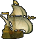 | XG0019 (Ship of Gradak) | - | 103 | - | - | - |
 |
Unused | 104 | 104 | - | - | - |
 |
OH4000 (Abandoned Amphitheater) | 106 | 106 | - | 29 (only in BG2:EE) | - |
 |
OH6100 (Hidden Refuge) | 107 | 107 | - | 31 (only in BG2:EE) | - |
 |
OH4100 (Heretic Temple) | 108 | 108 | - | 32 (only in BG2:EE) | - |
 |
OH6000 (Wild Forest) | 109 | 109 | - | 33 (only in BG2:EE) | - |
 |
OH5100 (Resurrection Gorge) | 110 | 110 | - | 34 (only in BG2:EE) | - |
 |
OH4200 (Deepstone Clanhold) | 111 | 111 | - | 30 (only in BG2:EE) | 18 (only in BG2:EE) |
 |
OH2000 (Adoy's Enclave) | 112 | 112 | - | - | - |
 |
OH3000 (Cloud Peaks) | 113 | 113 | - | - | - |
 |
AR30PB (Northern Citadel) | 114 | 114 | - | - | - |
 |
ARC001 (Castle Daerthmac) | 115 | 115 | - | - | - |
 |
Unused | - | 116 | - | - | - |
 |
Unused (BG:SoD) | - | 117 | - | - | - |
 |
Unused (BG:SoD) | - | 118 | - | - | - |
 |
Unused (BG:SoD) | - | 119 | - | - | - |
 |
Unused (BG:SoD) | - | 120 | - | - | - |
 |
Unused (BG:SoD) | - | 121 | - | - | - |
 |
BD7300 (Dead Man's Pass) | 123 | 123 | - | - | - |
 |
BD1000 (Coast Way Crossing) | 124 | 124 | - | - | - |
 |
BD2000 (Boareskyr Bridge) | 125 | 125 | - | - | - |
 |
BD3000 (Coalition Camp) | 126 | 126 | - | - | - |
 |
BD5000 (Underground River) | 127 | 127 | - | - | - |
 |
BD4000 (Dragonspear Castle) | 128 | 128 | - | - | - |
 |
BD7000 (Coast Way Forest) | 130 | 130 | - | - | - |
 |
BD7100 (Troll Claw Woods) | 131 | 131 | - | - | - |
 |
BD7200 (Forest of Wyrms) | 132 | 132 | - | - | - |
 |
BD7400 (Bloodbark Grove) | 133 | 133 | - | - | - |
| Blank icon (used by EET and IWD) | 134 | 134 | - | - | - | |
 |
ID1000 (Easthaven) | 135 | 135 | - | - | - |
 |
ID2000 (Kuldahar Pass) | 136 | 136 | - | - | - |
 |
ID2100 (Kuldahar) | 137 | 137 | - | - | - |
 |
ID3000 (The Vale of Shadows) | 138 | 138 | - | - | - |
 |
ID3600 (Temple of the Forgotten God) | 139 | 139 | - | - | - |
 |
ID4000 (Dragon's Eye) | 140 | 140 | - | - | - |
 |
ID5000 (Severed Hand) | 141 | 141 | - | - | - |
 |
ID6000 (Dorn's Deep) | 142 | 142 | - | - | - |
 |
ID7000 (Wyrm's Tooth) | 143 | 143 | - | - | - |
 |
ID8001 (Lower Dorn's Deep) | 144 | 144 | - | - | - |
 |
ID9100 (Lonelywood) | 146 | 146 | - | - | - |
 |
ID9200 (Barbarian Camp) | 147 | 147 | - | - | - |
 |
ID9300 (Burial Isle) | 148 | 148 | - | - | - |
 |
ID9500 (Gloomfrost) | 150 | 150 | - | - | - |
 |
ID9600 (Sea of Moving Ice) | 151 | 151 | - | - | - |
 |
IW1000 (Targos) | 152 | 152 | - | - | - |
 |
IW2000 (Shaengarne Ford) | 155 | 155 | - | - | - |
 |
IW2102 (Shaengarne Bridge) | 156 | 156 | - | - | - |
 |
IW3000 (Horde Fortress) | 157 | 157 | - | - | - |
 |
IW4000 (Western Pass) | 158 | 158 | - | - | - |
 |
IW4100 (Icewall) | 159 | 159 | - | - | - |
 |
IW5000 (Wandering Village) | 160 | 160 | - | - | - |
 |
IW5001 (The Fell Wood) | 161 | 161 | - | - | - |
 |
IW5004 (Cold Marshes) | 162 | 162 | - | - | - |
 |
IW5005 (River Caves) | 163 | 163 | - | - | - |
 |
IW5102 (River Caves Exit) | 164 | 164 | - | - | - |
 |
IW5200 (Black Raven Monastery) | 165 | 165 | - | - | - |
 |
IW5300 (The Underdark) | 166 | 166 | - | - | - |
| 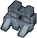 | RA5601 (Ice Temple) | - | 167 | - | - | - |
| 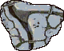 | IW3000 (Horde Fortress) Alternative | - | 168 | - | - | - |
| 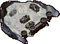 | IW6200 (Fields of Slaughter) | - | 169 | - | - | - |
 |
IW6201 (Fields of Slaughter) | 170 | 170 | - | - | - |
 |
IW6000 (Kuldahar Valley) | 172 | 172 | - | - | - |
 |
IW6104 (Dragon's Eye Exit) | 173 | 173 | - | - | - |
 |
ARES01 (Eilistraee's Clearing) | 175 | 175 | - | - | - |
 |
ARISH1 (Innershade) | 176 | 176 | - | - | - |
 |
WQ0001 (Silent Swamps) | 177 | 177 | - | - | - |
| ARLDV1 (Deep Gardens) | 178 | 178 | - | - | - | |
 |
L#ND01 (Southern Edge) | 179 | 179 | - | - | - |
 |
L#FOU0 (Hidden Sanctuary) | 180 | 180 | - | - | - |
 |
L#NI01 (Tangled Oak Island) | 181 | 181 | - | - | - |
 |
YS0390 (Govt. West) | 182 | 182 | - | - | - |
| 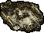 | ID9700 (IWD1 EET) | - | 184 | - | - | - |
| 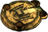 | IW5203 (IWD2 EET) | - | 185 | - | - | - |
| 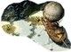 | IW5303 (IWD2 EET) | - | 186 | - | - | - |
| 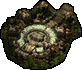 | IW6050 (IWD2 EET) | - | 187 | - | - | - |
| 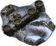 | IW6200 (IWD2 EET) | - | 188 | - | - | - |
| 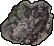 | ACIL0A (Silverrealms) | - | 195 | - | - | - |
| 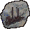 | ACIL0D (Silverrealms) | - | 196 | - | - | - |
| 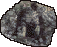 | ACIL01 (Silverrealms) | - | 197 | - | - | - |
| 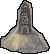 | ACIL03 (Silverrealms) | - | 198 | - | - | - |
 |
ACIL04 (Silverrealms) | - | 199 | - | - | - |
| 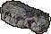 | ACIL06 (Silverrealms) | - | 200 | - | - | - |
| 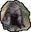 | ACIL41 (Silverrealms) | - | 201 | - | - | - |
| 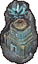 | ACIL50 (Silverrealms) | - | 202 | - | - | - |
| 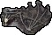 | ACIL70 (Silverrealms) | - | 203 | - | - | - |
| 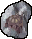 | ACIL9F (Silverrealms) | - | 204 | - | - | - |
| 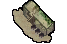 | L#AS01 (AlabasterSands) | - | 205 | - | - | - |
| 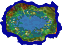 | ARBGX2 (Water Gardens - BG1NPCSoA) | - | 206 | - | - | - |
| 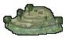 | L#AF01 (Whin Hill) | - | 207 | - | - | - |
| 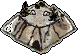 | L#ORM1 (Ormyrrs' Peak) | - | 208 | - | - | - |
| 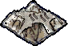 | L#ORM2 (Mountain Cemetery) | - | 209 | - | - | - |
| 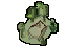 | L#XZE1 (Temple of Evening Glory) | - | 210 | - | - | - |
 |
NW1000 (Neverwinter Core) | - | 211 | - | - | - |
 |
NW1100 (Neverwinter's Docs) | - | 212 | - | - | - |
 |
NW1200 (Beggar's Nest) | - | 213 | - | - | - |
 |
NW1300 (Peninsula) | - | 214 | - | - | - |
 |
NW1400 (Blacklake) | - | 215 | - | - | - |
| 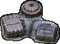 | IW1100 (Targos) | - | 216 | - | - | - |
| 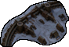 | IW1200 (Palisade) | - | 217 | - | - | - |
| 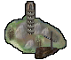 | ACDT01 (Irphong) | - | 218 | - | - | - |
| 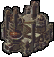 | AC#W01 (Goldspires) | - | 219 | - | - | - |
| 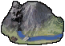 | ACIL10 (The Wailing Dwarf) | - | 220 | - | - | - |
 |
TC0450 (Classical Adventure) | - | 222 | - | - | - |
 |
TC0500 (Classical Adventure) | - | 223 | - | - | - |
 |
TC1300 (Classical Adventure) | - | 224 | - | - | - |
 |
TC1000 (Classical Adventure) | - | 225 | - | - | - |
 |
TC1100 (Classical Adventure) | - | 226 | - | - | - |
 |
TC1200 (Classical Adventure) | - | 227 | - | - | - |